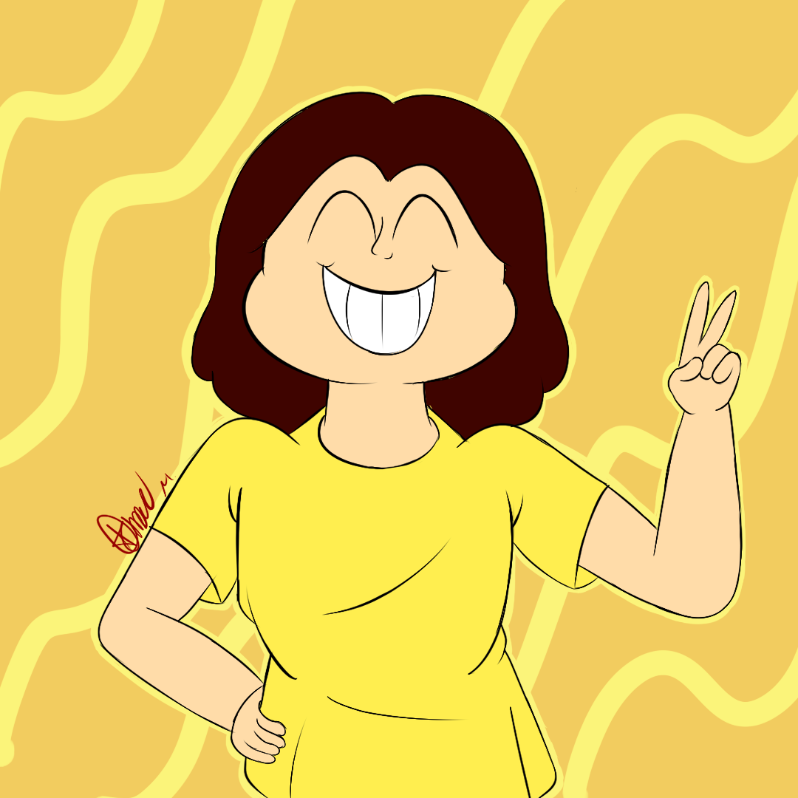
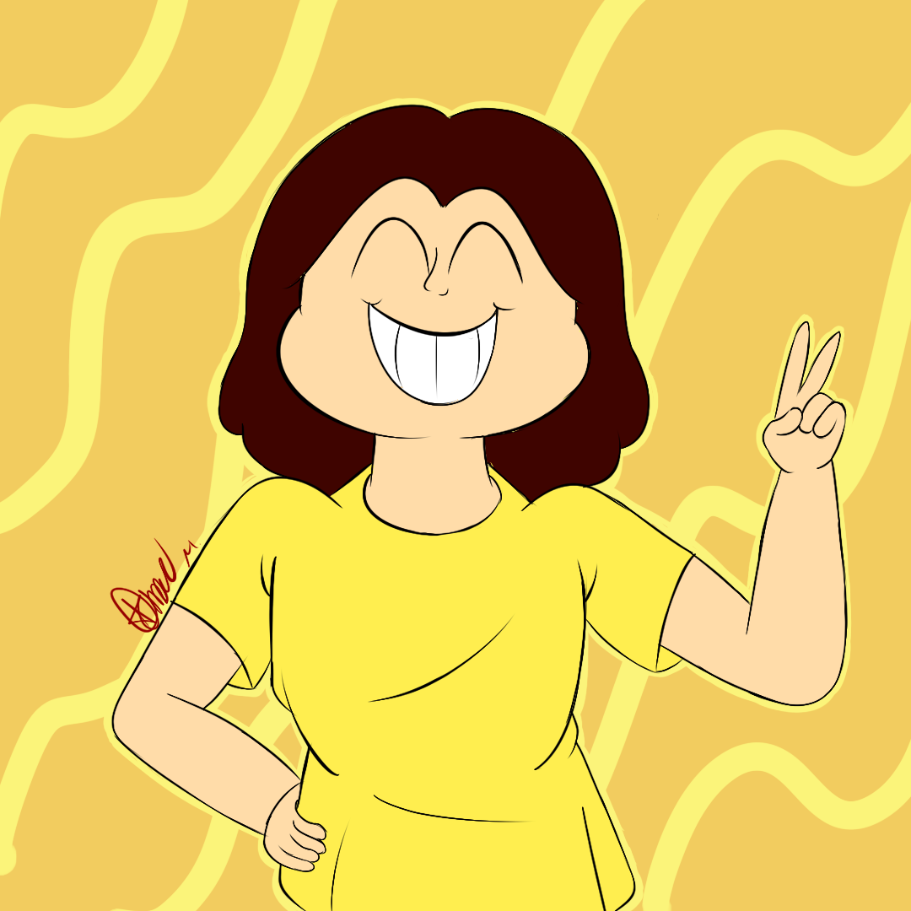
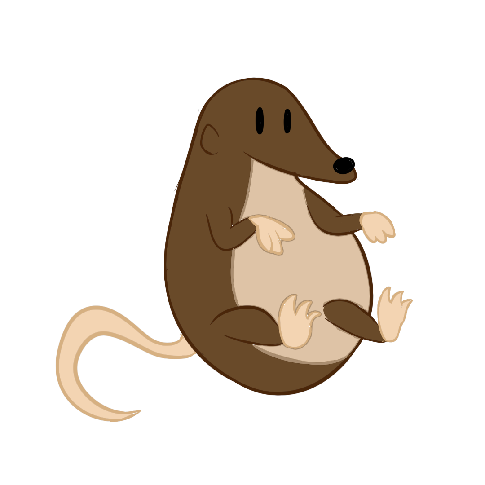
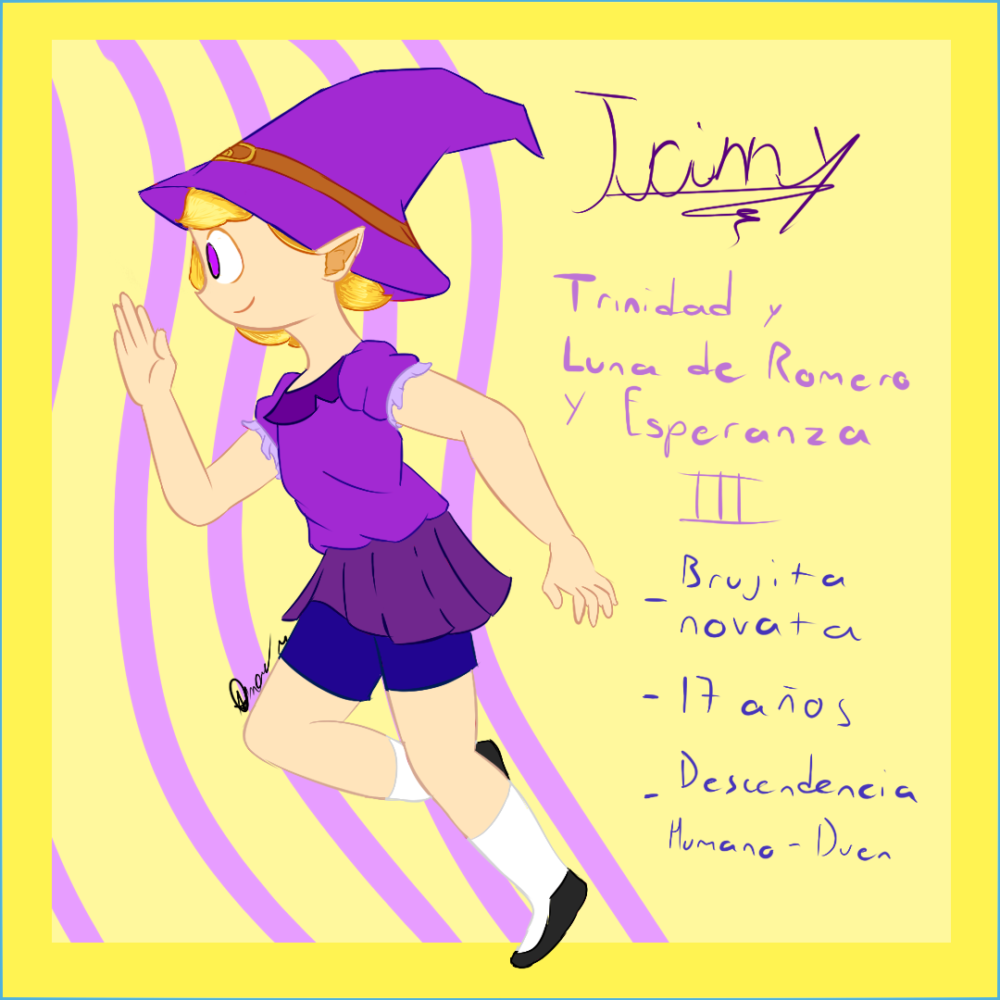
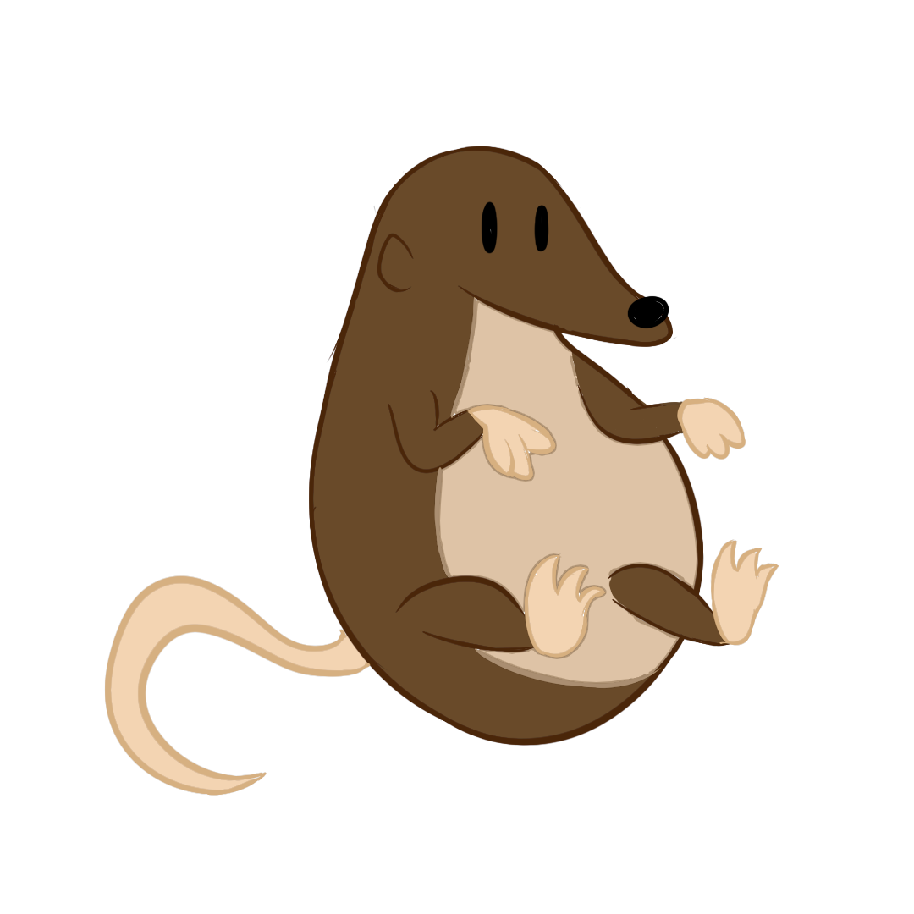
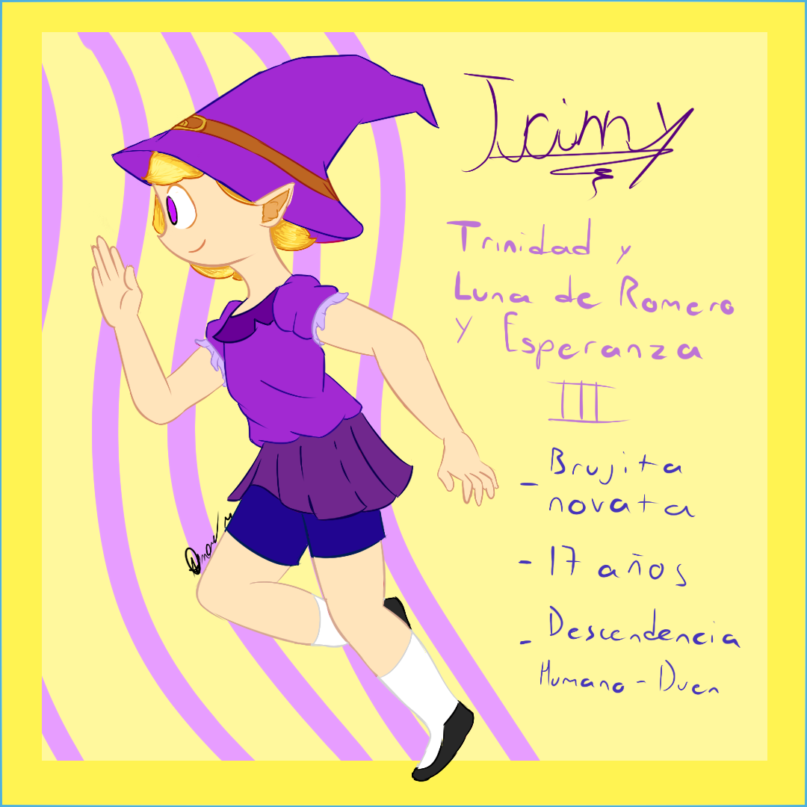

 



Trinny, la bruja
Trinidad y Luna de Romero y Esperanza III es una de mis creaciones, una pequeña bruja de 17 años hija de una humana y un duende. Es una principiante en la magia y siempre busca aprender algo nuevo, aunque es algo torpe para manejar su varita mágica. Le encantan los arcoiris y las auroras boreales, asi como molestar a su hermano por sus orejotas de duende.
Omar Gael Molina Reza
Soy una persona apasionada por el dibujo, tengo el sueño de compartir mis creaciones con el mundo y poder crear mi propia historia para una casa animadora famosa. Se me conoce por mi caracter serio, carismático y amistoso, asi como por mi intelecto y mis habilidades creativas, redactoras y matemáticas